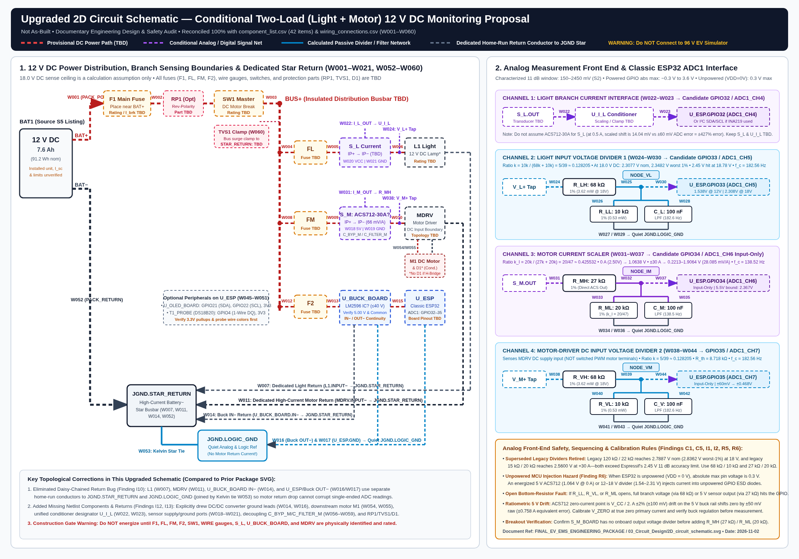
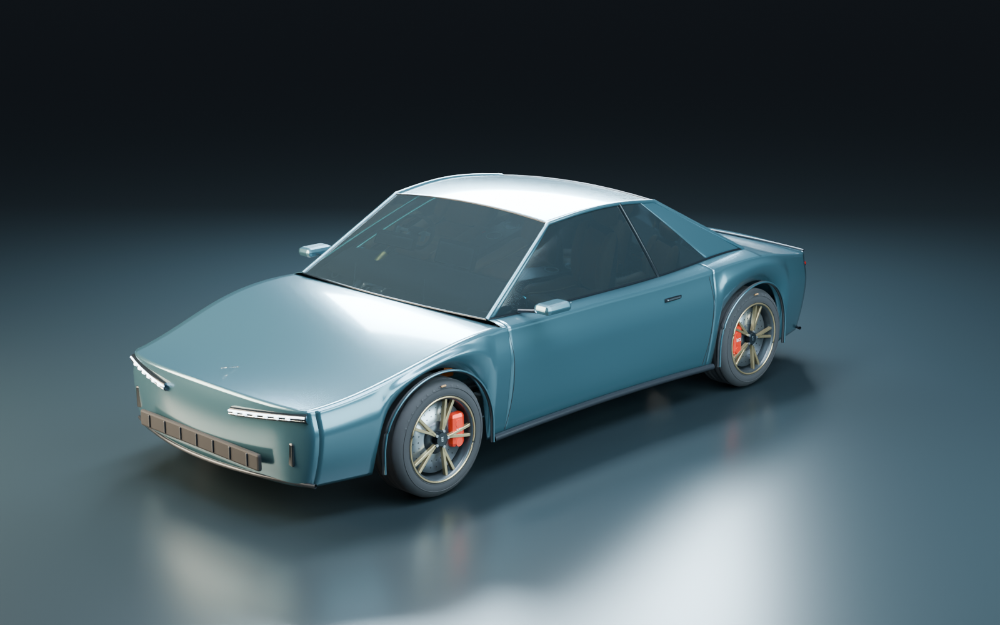

PHYSICAL SYSTEM · READ ONLY
Device Energy Monitor
Live values appear only when a validated record is received from the configured Firebase feed. No sensor data is generated by this page.
Engineering boundary
The 12 V circuit is a conditional reference proposal. Fuse, wire, battery limits, motor, switch, sensor module, and ESP32 board are not fully identified. No physical build validation is claimed.
Review circuit limits
MEASURED RECORD HISTORY
Live readings
Graphs remain empty until readings arrive.
FIREBASE · readings/latest
Recent records
| Time | V | A | W | Wh |
|---|---|---|---|---|
| No telemetry records received. | ||||
N/A
Estimated cost uses the reported cumulative Wh × the entered tariff. It is not a meter-certified bill.
Telemetry schema and connection setup ↗An ESP32 tag in a database record does not establish which device published it or prove measurement accuracy. Browser telemetry is read-only. Authentication, database connection, and sensor data are shown as separate states.
02 / ENGINEERING LAB · 12 V PHYSICAL REFERENCE
From current to insight.
Explore the measurement architecture, trace a connection, and interrogate the calculations.
Do not energize a motor branch from these documents alone.Battery charge and short-circuit limits, motor stall current, fuses and interrupt ratings, wire size, switch DC rating, sensor breakout, buck module and ESP32 carrier board still need identification. Sensor nodes can backfeed an unpowered ESP32 GPIO.
Complete engineering reference & original source documents
FINAL ENGINEERING PACKAGE SCHEMATIC
Two-load measurement architecture

The reference drawing is conditional. Sensor choice, protection values and several physical endpoints are intentionally unresolved.
SIGNAL AND POWER BOUNDARIES
What each channel measures
- Separate branch current sensing: one current sensor in series with the Light branch and one in series with the Motor controller DC input branch are needed to distinguish both simultaneous loads. A single upstream sensor measures only aggregate current.
- Voltage at the same boundary: branch power is calculated as PLight = VLight × ILight and PMotor = VMotor × IMotor. The Motor voltage point is the controller DC input, not the PWM motor terminals.
- Total: Ptotal = PLight + PMotor only when both branch pairs are sampled and time-aligned. Otherwise the webpage labels the aggregate database power as reported and does not infer individual load values.
- Energy and cost: E = ∫P dt; cost (₹) = E (Wh) ÷ 1000 × tariff (₹/kWh). The latest-only database path cannot establish sampling interval, integration accuracy, or firmware energy derivation.
- Grounding: proposed separate high-current returns to a star point, with logic reference joined at one Kelvin point. Shared return impedance can bias single-ended voltage measurements.
IDENTITY AND LIMITS
Key component status
| Item | Package proposal | Status |
|---|---|---|
| Battery | 12 V, 7.6 Ah listing candidate | UNVERIFIED · physical model and limits unknown |
| ESP32 | Classic ESP32 ADC1 GPIO32–35 candidates | UNVERIFIED · carrier board / header unknown |
| Motor sensor | ACS712ELCTR-30A-T IC candidate, scaled output | UNVERIFIED · Light sensor and breakout unknown |
| Voltage dividers | 68 kΩ / 10 kΩ, 1% assumed | Calculated proposal (18 V DC assumption) |
| Current scaler | 27 kΩ / 20 kΩ, conditional direct IC output | UNVERIFIED · do not assume breakout matches |
| Protection | F1, FL, FM, F2, RP1 and TVS1 | UNVERIFIED · values and parts unresolved |
| Switch / wire / terminals | Must be coordinated to branch and fault ratings | UNVERIFIED · exact parts and ratings unresolved |
RECALCULATED REFERENCE VALUES
Measurement calculations
- 68 kΩ / 10 kΩ divider: ratio = 10/(68+10) = 0.128205. At the assumed 18 V input: ADC = 18 × 0.128205 = 2.3077 V nominal. With independent 1% resistor extremes, maximum ratio is 0.130457, so ADC = 2.3482 V.
- ADC margin: 2.45 V is the cited classic ESP32 ADC1 11 dB suggested upper range, not an absolute-max rating. Worst-case divider reaches 2.45 V at about 18.78 V. The assumed 18 V has not been validated against actual battery charging or transients.
- ACS712 output scale: 20/(27+20) = 0.425532. At 5 V supply and 66 mV/A typical, zero-current output 2.50 V becomes 1.0638 V; +30 A output 4.48 V becomes 1.9064 V. Scaled sensitivity is about 28.09 mV/A. Datasheet ADC error alone corresponds to about 2.14 A; this is not suitable evidence of useful 0.5 A Light measurement.
- Electrical relationships: P = V × I; E(Wh) = Σ[P(W) × Δt(s)]/3600. Values are calculations from assumptions and datasheets, not physical test results.
UNRESOLVED SAFETY ITEMS
Protection, startup/shutdown and fault modes
- Fuses must be selected from actual battery prospective fault current, DC interrupt rating, time-current / I²t behavior, branch inrush, and the weakest downstream conductor. No fuse values are approved.
- Reverse-polarity and transient suppression parts are not selected. Motor suppression depends on motor type and whether the driver is a reversing H-bridge; a diode across an H-bridge output can short a commanded polarity.
- ACS712 IC data does not rate an unidentified breakout trace, terminals or harness. Allegro states the IC is not intended for automotive use.
- Classic ESP32 input absolute limits depend on VDD. With the MCU unpowered (VDD = 0 V during startup/shutdown or F2 open), the cited GPIO upper limit is 0.3 V; proposed 1–2.35 V sensor/divider nodes inject current into unpowered GPIOs unless isolated.
- Open-circuit fault on bottom divider resistors (R_LL, R_VL, R_ML) exposes ADC nodes directly to unattenuated 18 V or 5 V rails; open-circuit fault on primary return W052 diverts load return current through W053 and non-isolated buck common.
AUTHORITATIVE HANDOFF
Wiring, pin mapping and source evidence
60-row wiring schedule
ESP32 logical pin mapping
Circuit explanation
Polarity and grounding
Power, energy and cost
Fuse and protection requirements
Manufacturer and institutional source register
Final implementation and engineering audit
Allegro ACS712 datasheet ↗
Espressif classic ESP32 ADC guide ↗
TI LM2596 datasheet ↗
Littelfuse fuse fundamentals ↗
U.S. DOE AFDC: EV range factors ↗
Independent engineering audit report
03 / VEHICLE STUDIO
Electric, by design.
An open window into electric mobility. Explore the machine. Understand every watt.
SOFTWARE SIMULATIONOriginal concept · Independent 96 V scenario
EV—01
AERIS GT
Electric grand tourer / design study
Preparing your studioLoading the vehicle and its materials…

3D is unavailable. The simulator and component guide remain fully accessible.
Glacier silver
Drag to orbit · Scroll to explore00
DESIGN STUDY
A system, in balance.
Select a component on the vehicle or use the component menu. Reveal the powertrain with a cutaway or exploded view.
96 V / 14.4 kWhEditable scenario assumptions
Component tools become available when the 3D vehicle loads.
REAR DRIVE / STRAIGHT-LINE KINEMATICS
Motor → reduction → differential → half-shafts → wheels
Motor rotor0 rpm
Reduction ratio8.2 : 1
Wheel speed0 rpm
Total drive torque at wheels0 N·m
Wheel angle follows integrated travel. Calipers and suspension stay fixed; discs and shafts rotate. Equal wheel speed assumes straight travel with no tire slip. Suspension dynamics and steering are not simulated.
Initial SoC is an assumption
MAKE THE CONNECTION
Power, in your hands.
Press Drive for 18% throttle, or enable individual loads and start the simulation.
Paused · press Drive to see the wheels turn
Watt values are editable examples, not measured device specifications.
Reset accumulated trip kWh, battery % and cost for all 5 devices?
Battery capacity is an unverified simulation assumption.
Open the energy screen for a large view inside the car. Use + or scroll to zoom closer; choose Pan to inspect any part. OFF preserves energy already used.
SIMULATED OUTPUTS
Power and device energy
Device energy will appear after simulation starts.
Auxiliary device watts are the values you enter at the modeled low-voltage output. Pack-side input includes the assumed DC/DC efficiency.
Acceleration0.00 m/s²
Terminal voltage— V
Battery current0.0 A
Road load / drive force0 / 0 N
Regeneration0 W
Simulated time00:00
Wheel / motor ω0.0 / 0.0 rad/s
Road grade / gravity0.0% · 0 N
Braking dissipation0.000 Wh
MODEL INPUTSEditable vehicle and battery assumptionsChange and apply to the scenario
Range is hidden until 0.5 km of positive net energy use is observed.
Inherited values: 96 V × 150 Ah = 14.4 kWh nominal arithmetic; 720 kg; Cd 0.34; frontal area 1.9 m²; Crr 0.012; 18 kW; 180 N·m; motor efficiency 0.90; inverter efficiency 0.93; DC/DC efficiency 0.88; pack resistance 35 mΩ; 28% regenerative fraction with a 10 kW cap. None are verified vehicle specifications or battery data. Regenerative return before cap = 28% × 0.90 × 0.93 = 23.436% of modeled mechanical braking work.
Range is an extrapolation from simulated net pack Wh/km after 500 m, using nominal V × Ah and a user-editable reserve. It omits weather, auxiliaries not entered, battery aging, charge limits and commercial driving cycles. The U.S. DOE notes EV range varies with temperature, speed, acceleration, cargo and grade.